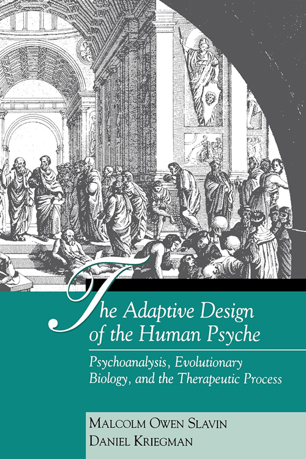
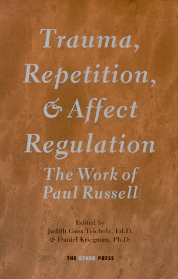

Here are some of my other books and articles.

Addressing one of the most fundamental issues in any examination of human experience, this important work connects evolutionary biological concepts to modern psychoanalytic theory and the clinical encounter. Synthesizing their years of experience in the practice of psychotherapy and psychoanalysis, the authors provide a comparative psychoanalytic map of current theoretical controversies and a new way of deconstructing the hidden assumptions that underlie Freudian, Ego Psychological, Kleinian, Object Relational, Self Psychological, and Interpersonal theories. In so doing, they provide a new vantage point from which to integrate competing models into a larger picture that more fully embraces the many facets of human nature. Moreover, they offer clinicians a new framework with which to understand and respond to the inevitable paradoxes and conflicts that arise in the therapeutic relationship.

Through his teaching, lecturing, supervision, and clinical work, Paul Russell profoundly influenced a generation of psychoanalysts. Now, here, for the first time his work is available in print along with commentaries by some of the most important scholars in the field.
Written with Irving Biederman, the renowned perception psychologist, this was an undergraduate research project demonstrating the existence of long lasting visual images in the absence of backward masking. This effect was first demonstrated to me by Don Burke. It was subsequently featured in Scientific American, 252, 2, 126 127, 1985.
Written with Len Solomon, the first reader on my doctoral dissertation committee, this was a description of the fit between what a cult leader offers and what a cult member seeks
Kriegman, D. & Solomon, L. (1985b). Psychotherapy and the "new religions": Are they the same? Cultic Studies Journal, 2, 1, 2-16.
Comparing and contrasting the therapeutic relationship between a therapist and a patient and an abusive cult leader and a follower.
Self psychology with its emphasis on empathy and relatedness offers an alternative to Freud's more selfish instincts, which he felt were validated by evolutionary biology. This paper demonstrates that both selfish and loving motives are inherent in the evolved design of the human psyche.
Slavin, M. O. & Kriegman, D. (1988). Freud, biology, and sociobiology. American Psychologist, 43, 658-661.
Discussed the relationship between Freud and modern Darwinian theory.
Written with Charles Knight, founder of The Commonwealth Institute. Examines and contrasts assumptions about human nature found in psychoanalytic and political discourse.
The notion that treatment failure (a negative therapeutic reaction) results from a patient's compulsion to repeat is seen as a way to protect the analyst by blaming the patient. Problematic repetitions are reanalyzed from the evolutionary perspective that highlights the adaptive ends that are being sought even when the repetitions produce chronic problems.
Our early attempt to resolve the dialectic between Freudian drive psychology and modern relational theories.
Kriegman, D. & Slavin, M. O. (1990). On the resistance to self psychology: Clues from evolutionary biology. In A. Goldberg (Ed.), Progress in Self Psychology, Vol. 6, pp. 217-250). Hillsdale, NJ: Analytic Press.
Self psychology rightly emphasizes empathy in apprehending the phenomena (psychological experience) that psychoanalysis aims to understand. However, it does so by overstating overlapping interests and underestimating the conflicts in interests that require human psychology to have selfish motives.
Compassion and altruism were seen as reaction formations, i.e., defensive transformations of self-interested drives into their opposites. In contrast, evolutionary biology shows us that altruistic motives are just as basic as selfish motives.
A further elaboration of the evolutionary resolution of the classical (drive) and relational dialectic in psychoanalysis.
Relational theories, such as self psychology and unlike more classical perspectives, in the emphasis on empathy, confer epistemological equality on both the analyst's and the patient's perceptions. Yet, treatment proceeds, in part, by eliminating delusions. This paper shows how one can maintain a commitment to empathic understanding without abandoning a thoroughgoing respect for reality.
The Consumer Reports study of psychotherapy's effectiveness revealed a lack of a benefit from adding medication. Further, it suggested that medications must cause as much damage as benefit.
If one doesn't elevate the therapist's reality above the patient's, how does therapy help patients undo their distortions of reality? This paper shows how one can maintain an exquisitely empathic therapeutic stance without denying an obvious truth: perceptions of reality vary in their validity.
Slavin, M. O. & Kriegman, D. (1998). An evolutionary biological perspective on psychoanalysis. In Robert Langs, (Ed.), Theories in Psychoanalysis, pp. 255-296. NY: International Universities Press.
Summarizes some of the main points of our book The Adaptive Design of the Human Psyche, and the centrality of negotiating human relationships that are replete with a mixture of mutuality, conflict, and deception.
For the therapeutic engagement to bring about real change, the relationship must be experienced as genuine in some significant aspects. In a genuine relationship in which conflict is inevitable, both parties are affected. This inevitably means the analyst must also be changed by the interaction.
Slavin, M. O. & Kriegman, D. (1998). Bigger than both of us: Double binds, conflicting interests, and the inherent paradoxes of human relatedness. Psychoanalytic Dialogues, 8, 2, 317-327.
Discussion of Philip Ringstrom's 1998 paper: "Therapeutic impasses in contemporary psychoanalytic treatment: Revisiting the double bind hypothesis." Psychoanalytic Dialogues, 8(2), 297–315.
Slavin, M. O. & Kriegman, D. (1998). Paradox and conflict, meta-communication and negotiation in psychoanalysis: Response to Dr. Ringstrom's discussion. Psychoanalytic Dialogues, 8, 2, 293-296.
Continues the dialogue with Ringstrom.
Slavin, M. O. & Kriegman, D. (1998). Conflicting interests and the creation of a third space. Psychoanalytic Dialogues, 8, 3.
The dialogue with Ringstrom culminates here.
Kriegman, D. (1998). Evolutionary psychoanalysis: An advance in understanding the human psyche or a phylogenetic fantasy. Contemporary Psychology, 43, 2, 138-139.
A rather critical review of Robert Langs's proposal of evolutionary psychoanalysis.
Kriegman, D. (1998). Of quantum leaps and oxymorons: A reply to Langs. Contemporary Psychology, 43, 9, 651-652.
Critical response to Langs's defense of his book.
Kriegman, D. (1998). Crazy enough, or just crazy? Contemporary Psychology, 43, 9, 652-653.
Final response to Langs.
Kriegman, D. (1999). Trauma, conflict, and countertransference: A discussion of Peter Thomson’s paper. Canadian Journal of Psychoanalysis, 7, 1, 59-62.
Reanalyzed Dr. Thomson's depiction of his empathic failure in an analysis as an inevitable conflict. The resolution of the conflict was central in the treatment and was not just indicative of a failure on the part of the analyst.
The evolutionary understanding of parental investment and sexual selection makes predictions about sex differences that are relatively absent in psychoanalytic theory. The paper suggest ways to integrate the biological implications into psychoanalysis.
Psychoanalysis has suffered a great loss of prestige as some of its theories have come to be seen as disconnected from common sense and reality. Using a biological perspective, I explore how to rescue the living baby (valid psychoanalytic notions) from the dirty bathwater.
Explores an analytic treatment in which profound conflicts of interest between analyst and her patient were successfully negotiated, highlighting the importance of acknowledging and working with such conflict.
Compared dynamic psychoanalytic treatment to the currently more popular cognitive-behavioral model for treating dangerous sex offenders. Results from psychoanalytic treatment were significantly superior (as measured by fewer rearrests for criminal misconduct) to the best results seen with CBT.
Based on sworn testimony and actual studies of the recidivism of sex offenders, it is conclusively shown that expert predictions of dangerousness that are used to maintain indefinite civil commitment (incarceration in correctional "treatment" centers) have virtually no validity.
Explains how, despite his endless lies, Donald Trump is so effective at generating loyal true believers.
Examines the work of Kevin MacDonald, the antisemitic academic. Shows how his pseudoscience has been used by white supremacists and how it fools even intelligent, educated people who are unfamiliar with modern evolutionary biology or sound scientific methodology.
Tells the intimate story (I knew him well) of how Harvey Weinstein went from a narcissistic idealist to becoming a poster boy for the #MeToo Movement. Also presents a critique of our current response to sex offenders.
Uses a close look at the case of Arthur Shawcross, a serial murderer, to examine the concept of free will and criminal responsibility.
Describes how Robert Trivers, the renowned evolutionary biologist, solved part of the puzzle of altruism; how "survival of the fittest" can include survival of those who exhibit high levels of prosocial motivation.
{kind=link}
{kind=link}
{kind=link}